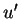
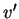
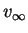
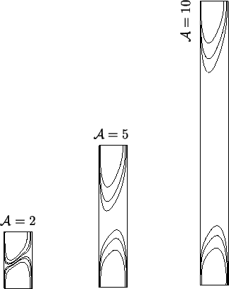
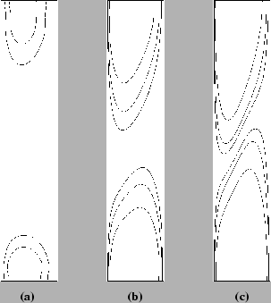

That the temperature and mass fraction are practically independent of
height near
 in the examples of
figure 5.8
is qualitatively evident. To quantify the extent of the
fully developed region, and hence the existence or otherwise of the
conduction-diffusion regime, the discrepancies
between the finite element solution and the fully developed profiles
(4.24)-(4.26), now subscripted with
in the examples of
figure 5.8
is qualitatively evident. To quantify the extent of the
fully developed region, and hence the existence or otherwise of the
conduction-diffusion regime, the discrepancies
between the finite element solution and the fully developed profiles
(4.24)-(4.26), now subscripted with  ,
are introduced:
,
are introduced:
The maxima in the definitions of the velocity component discrepancies,  (5.8) and  (5.9) are taken over the nodal values of the Fastflo solution.
Determination of the velocity profile,
, from (4.27),
requires evaluation of the integration constant  . Here,
. Here,
 was chosen so as to minimize the root-mean-square discrepancy
on the mid-height line,
was chosen so as to minimize the root-mean-square discrepancy
on the mid-height line,
 , using the 32 nodal values. This
value of
, using the 32 nodal values. This
value of  can then be checked against the numerical vertical
pressure gradient via (4.28) and (5.10).
Figure 5.9 plots the discrepancies for the same run as
can then be checked against the numerical vertical
pressure gradient via (4.28) and (5.10).
Figure 5.9 plots the discrepancies for the same run as
 |
The obvious irregularity of the pressure field in
figure 5.9(e) is not unexpected, nor is it necessarily
of purely numerical origin. Pressure singularities were anticipated in the
corners due to the multivalued boundary condition on  (§3.3.3). They do appear to have deleteriously affected
large regions of the pressure solution, but the result in the fully developed
zone accords with the analytic solution of chapter 4.
(§3.3.3). They do appear to have deleteriously affected
large regions of the pressure solution, but the result in the fully developed
zone accords with the analytic solution of chapter 4.
Since the discrepancies (5.7)-(5.11) are less than
1% for some continuous horizontal lines in each of
figures 5.9(a-e),
this set of parameters pertains to the
conduction-diffusion regime. The proportion of the height of the cavity
between the end-zones is small, so that this case is near the limit
of the regime. To investigate this, Fastflo solutions were obtained for
the same set of parameters except for the vertical aspect ratio,  , which
was varied. The temperature discrepancy,
, which
was varied. The temperature discrepancy,  , is plotted in
figure 5.10. These plots clearly reveal that the
, is plotted in
figure 5.10. These plots clearly reveal that the
|  |
A similar result may be expected to hold for the overall mass transfer rate.
The other principal parameter involved in the determination of the
conduction-diffusion regime is the combined Grashof number,
 . Figure 5.11 shows how the regime can be
. Figure 5.11 shows how the regime can be
|  |